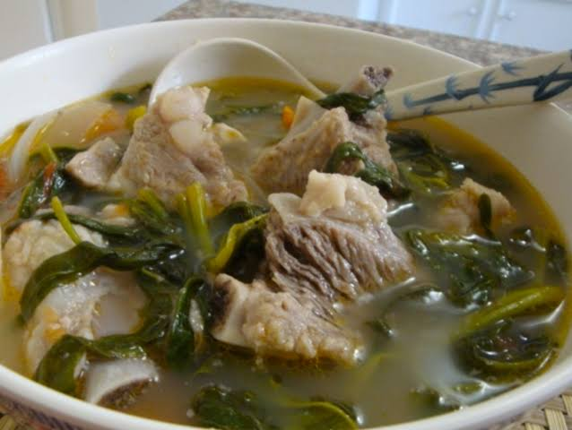

Sinigang

Description
Sinigang is a popular Filipino soup known for
its sour and delicious taste. It is usually
cooked with pork, vegetables, and tamarind
seasoning. It is best served hot with rice.
Ingredients
- 500 grams pork
- 1 packet sinigang mix
- 1 onion, sliced
- 2 tomatoes, sliced
- 1 radish, sliced
- 1 eggplant, sliced
- 1 bunch kangkong
- 6 cups water
- Fish sauce to taste
Steps
- Boil water in a large pot.
- Add the pork and cook until tender.
- Add onion and tomatoes.
- Add the radish and eggplant.
- Pour in the sinigang mix.
- Add fish sauce according to your taste.
- Add kangkong and cook for a few minutes.
- Turn off the heat.
- Serve hot with rice and enjoy!
Back to Home